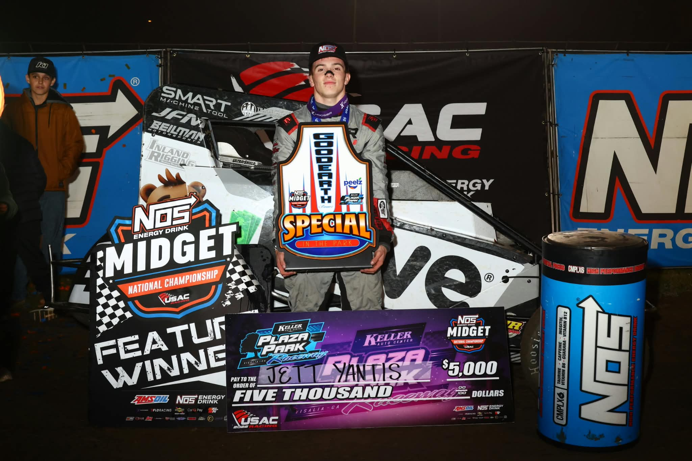

Jett Yantis Wins Good Earth Farms Special USAC Midget Feature at Plaza Park
Yantis started second and led laps 2 through 40 of the 40-lap, $5,000-to-win feature, the first USAC National Midget event at Plaza Park Raceway. Kevin Thomas Jr. finished second and Justin Grant third.

Jett Yantis of Bakersfield, California, won the 40-lap Good Earth Farms Special Presented by Peelz, the first USAC NOS Energy Drink Midget National Championship feature at Plaza Park Raceway in Visalia, California, on Monday, Nov. 23, according to official USAC results. USAC had postponed the original Nov. 18 date because of rain and rescheduled the event for Monday night. Yantis started second in the Beilman No. 31 and led laps 2 through 40 after T.J. Smith led the opening lap. The feature paid $5,000 to win, USAC said in its Nov. 17 reschedule announcement.
Kevin Thomas Jr. started sixth and finished second, and Justin Grant was third from third. Kyle Larson started 15th and finished fourth, and Corey Day was fifth. Brecken Reese, Daison Pursley and Jacob Denney completed the top eight in the 25-car field. Denney was the hard charger, advancing from 24th to eighth, according to USAC. Jett Barnes flipped on lap 7 of the feature, and Jakeb Boxell flipped on lap 37. Two nights earlier at Merced, USAC said a runner-up finish was the best career USAC National Midget result for both Yantis and Beilman Motorsports.
Thomas Jr. set a new track record in qualifying at 11.476 seconds, and Yantis was the fastest driver in Dirt Draft hot laps at 11.305 seconds, according to USAC. Denney continues to lead the USAC National Midget standings with 1,241 points, ahead of Thomas Jr. with 1,164 and Grant with 1,136. The series is next scheduled to race Tuesday, Nov. 24, in the 12th Jason Leffler Memorial at Bakersfield Speedway at Kevin Harvick’s Kern Raceway.